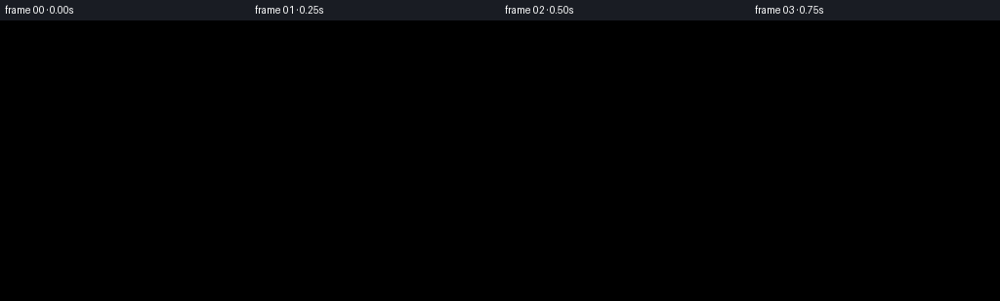
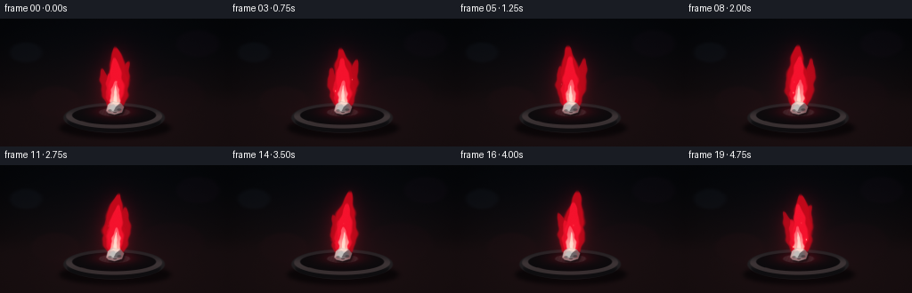
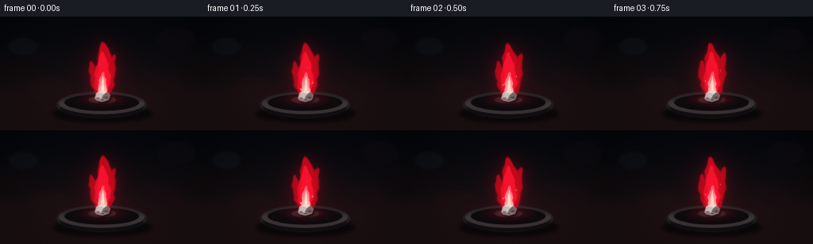

CODING AGENTS AS PIXEL WORLD MODELS
traex/GPT-5.6-Sol · phygen_128
点击播放 · 原生 RGB 像素
逐轮保存的候选
回放视频、检查图与代码变化。
每份候选均可单独播放。实际图片检查记录在下方工具轨迹中。
候选 01播放与检查图
点击播放 · 原生 RGB 像素


展开代码变化
--- 上一保存版本
+++ 本次保存版本
@@ -0,0 +1,206 @@
+#!/usr/bin/env python3
+"""Procedurally render a burning lithium sample as a 20-frame RGB video."""
+from pathlib import Path
+import math
+import numpy as np
+import cv2
+from PIL import Image, ImageDraw, ImageFilter
+import artifact_io
+
+CASE_DIR = Path(__file__).resolve().parent
+W, H, N = 256, 144, 20
+S = 4
+w, h = W*S, H*S
+Y, X = np.mgrid[0:h, 0:w].astype(np.float32)
+xx, yy = X/S, Y/S
+
+
+def smoothstep(a, b, x):
+ z = np.clip((x-a)/(b-a), 0, 1)
+ return z*z*(3-2*z)
+
+
+def alpha_over(img, color, alpha):
+ a = np.clip(alpha, 0, 1)[..., None]
+ return img*(1-a) + np.asarray(color, np.float32)*a
+
+
+def add_light(img, color, strength):
+ return np.minimum(255, img + np.asarray(color, np.float32)*np.clip(strength, 0, 1)[..., None])
+
+
+def ellipse_mask(cx, cy, rx, ry, softness=1.0):
+ d = np.sqrt(((xx-cx)/rx)**2 + ((yy-cy)/ry)**2)
+ return 1-smoothstep(1-softness/max(rx,ry), 1+softness/max(rx,ry), d)
+
+
+def polygon_mask(points, blur=0.0):
+ im = Image.new('L', (w, h), 0)
+ d = ImageDraw.Draw(im)
+ d.polygon([(int(a*S), int(b*S)) for a,b in points], fill=255)
+ if blur:
+ im = im.filter(ImageFilter.GaussianBlur(blur*S))
+ return np.asarray(im, np.float32)/255
+
+
+def flame_lobe(base_x, base_y, tip_y, max_width, sway, phase, frame, lean=0.0):
+ """Soft asymmetric flame lobe based on a flickering curved centerline."""
+ q = (base_y - yy) / max(1e-5, base_y-tip_y) # zero at base, one at tip
+ inside_y = smoothstep(-0.03, 0.03, q) * (1-smoothstep(0.96, 1.025, q))
+ # Coherent low frequency movement, greater at tip.
+ center = (base_x + lean*q + sway*(q**1.55)*np.sin(phase + 2.8*q + frame*0.31)
+ + 1.1*np.sin(frame*.48 + phase*.7)*q*q)
+ width_profile = (0.28 + 1.22*np.sin(np.pi*np.clip(q,0,1))**0.70) * max_width
+ width_profile *= (1 - .52*np.clip(q,0,1))
+ d = np.abs(xx-center) / np.maximum(width_profile, .35)
+ edge = 1-smoothstep(.72, 1.04, d)
+ # Turbulent edge modulation is smooth in time and height.
+ ripple = .92 + .10*np.sin(16*q + frame*.67 + phase) + .05*np.sin(29*q-frame*.39)
+ return np.clip(inside_y * (1-smoothstep(.70*ripple, 1.02*ripple, d)), 0, 1)
+
+
+def blur(mask, sigma_px):
+ return cv2.GaussianBlur(mask.astype(np.float32), (0,0), sigma_px*S)
+
+
+def make_frame(i):
+ t = i / 4.0
+ rng = np.random.default_rng(4815+i)
+
+ # Dark cinematic laboratory background and mahogany fireproof work surface.
+ top = np.array([7, 9, 13.], np.float32)
+ bottom = np.array([28, 17, 18.], np.float32)
+ grad = smoothstep(0, 1, yy/H)[...,None]
+ img = top*(1-grad) + bottom*grad
+ vignette = np.clip(((xx-128)/154)**2 + ((yy-76)/108)**2, 0, 1)
+ img *= (1-.40*vignette[...,None])
+ # Out-of-focus lab highlights.
+ for cx,cy,rad,col,op in [(29,38,18,(29,38,49),.18),(222,28,24,(27,16,30),.16),
+ (62,93,27,(55,19,24),.13),(193,87,36,(45,13,23),.10)]:
+ img = alpha_over(img, col, ellipse_mask(cx,cy,rad,rad*.62,4)*op)
+ # Surface horizon and warm pool of reflected flame light.
+ img = alpha_over(img, (23,14,16), smoothstep(76,103,yy)*.65)
+ pool = np.exp(-(((xx-128)/69)**2 + ((yy-111)/25)**2)*2.0)
+ img = add_light(img, (56,5,13), pool*(.22+.025*np.sin(i*.7)))
+
+ # Back shadow cast by dish.
+ shadow = ellipse_mask(129,123,63,12,3)
+ img = alpha_over(img, (2,2,3), blur(shadow,2.2)*.66)
+
+ # Ceramic combustion dish: beveled dark bowl with warm red reflections.
+ dish_outer = ellipse_mask(128,111.5,57,17,1.1)
+ img = alpha_over(img, (31,29,31), dish_outer*.97)
+ # Raised rim and outer lower bevel.
+ lower = ellipse_mask(128,115,53,13,1.0) * smoothstep(111,119,yy)
+ img = alpha_over(img, (11,11,13), lower*.88)
+ rim = np.clip(ellipse_mask(128,109.5,54,14,1.0)-ellipse_mask(128,108.3,47,10.5,1.0),0,1)
+ rim_shine = rim*(.22+.78*smoothstep(102,111,yy))
+ img = alpha_over(img, (69,59,60), rim_shine*.7)
+ inner = ellipse_mask(128,108.8,47,10.6,1.0)
+ img = alpha_over(img, (10,9,11), inner*.95)
+ # Red glow catches the inner glaze immediately around sample.
+ red_catch = np.exp(-(((xx-129)/33)**2+((yy-105)/8.5)**2)*2.2)*inner
+ img = add_light(img, (105,7,18), red_catch*(.44+.04*np.sin(i*.73)))
+ # Tiny specular streak on front rim.
+ spec = ellipse_mask(111,115,20,2.0,.7)*rim
+ img = alpha_over(img, (109,75,75), spec*.28)
+
+ # Grey powder/oxidized salts beneath the metal.
+ ash = ellipse_mask(128.5,105.3,17.5,4.7,1.2)*inner
+ ashtex = .82 + .12*np.sin(xx*1.8+yy*.9) + .06*np.sin(xx*4.4-yy*1.3)
+ img = alpha_over(img, (72,61,63), ash*np.clip(ashtex,0,1)*.48)
+
+ # Build coherent layered lithium flame masks. The burn remains steady, while tips flicker.
+ flick = math.sin(i*.72)*1.8 + math.sin(i*.29+1.2)*.8
+ outer = flame_lobe(129,102,31+flick,13.2,5.5,.7,i,lean=1.6)
+ left_tongue = flame_lobe(125,101,54+2.2*math.sin(i*.54+1),8.2,4.0,2.3,i,lean=-8.0)
+ right_tongue = flame_lobe(134,101,46+2*math.sin(i*.43+2),8.5,3.4,4.1,i,lean=8.0)
+ outer = np.maximum(outer, np.maximum(left_tongue*.84, right_tongue*.88))
+ middle = flame_lobe(129,102,43+1.6*math.sin(i*.65+.4),9.5,3.0,1.4,i,lean=1.0)
+ middle = np.maximum(middle, flame_lobe(126.5,101,61+math.sin(i*.52),6.8,2.1,2.4,i,lean=-3.0)*.7)
+ core = flame_lobe(129,102,69+1.0*math.sin(i*.58+1),5.7,1.4,3.0,i,lean=.5)
+ core *= (1-smoothstep(98,103,yy)*.18)
+
+ # Broad atmospheric red halo goes behind the opaque flame.
+ halo = blur(outer,9.0)
+ far_halo = blur(outer,21.0)
+ img = add_light(img, (102,0,16), far_halo*.34)
+ img = add_light(img, (155,3,20), halo*.34)
+
+ # Semi-transparent ruby outer envelope, crimson body, and lithium-carmine inner flame.
+ edge_alpha = np.clip(outer*.70 + blur(outer,1.7)*.22,0, .87)
+ # Deep-red rim is clearly visible against black.
+ img = alpha_over(img, (204,8,26), edge_alpha)
+ img = alpha_over(img, (246,20,48), middle*.78)
+ # Vertical color modulation produces transparent living flame rather than flat paint.
+ hotzone = np.clip(core*(.72 + .28*smoothstep(76,100,yy)),0,1)
+ img = alpha_over(img, (255,91,109), hotzone*.87)
+ inner = core * smoothstep(62,104,yy)
+ img = alpha_over(img, (255,210,187), inner*.78)
+ basehot = ellipse_mask(129,98.5,7.7,5.0,1.2)*outer
+ img = alpha_over(img, (255,231,207), basehot*.76)
+ # Fine bright sinuous central filament.
+ filament = flame_lobe(129,101,75,2.0,.8,1.9,i,lean=.3)
+ img = alpha_over(img, (255,244,226), filament*.62)
+
+ # Render the lithium fragment in front of flame base: irregular, metallic silver.
+ piece_pts = [(119.2,103.8),(121.0,97.0),(126.2,93.4),(134.8,94.8),
+ (139.0,99.4),(136.8,105.5),(128.5,108.0),(121.8,106.6)]
+ pshadow = polygon_mask([(x+1.8,y+2.3) for x,y in piece_pts],1.4)
+ img = alpha_over(img,(4,3,4),pshadow*.7)
+ piece = polygon_mask(piece_pts,.35)
+ # Faceted lithium surface: silver grey with pink-red flame reflections.
+ img = alpha_over(img,(132,129,130),piece*.98)
+ facet1 = polygon_mask([(121,97),(126.2,93.4),(130,99),(127.5,104),(120,103.5)],.25)*piece
+ img = alpha_over(img,(199,198,194),facet1*.78)
+ facet2 = polygon_mask([(130,99),(134.8,94.8),(139,99.4),(136.8,105.5),(127.5,104)],.25)*piece
+ img = alpha_over(img,(86,79,82),facet2*.62)
+ cut = polygon_mask([(126.2,93.5),(134.8,94.8),(130,99)],.2)*piece
+ img = alpha_over(img,(231,224,218),cut*.72)
+ # Melting/oxidizing red perimeter and a white-hot ignition line.
+ edgepiece = np.clip(blur(piece,.75)-blur(piece,2.0),0,1)
+ img = alpha_over(img,(255,45,54),edgepiece*.76)
+ ignition = polygon_mask([(123,96.8),(127,93.7),(135,95.0),(132,96.8),(127,96.0)],.65)
+ img = alpha_over(img,(255,223,206),ignition*.75)
+ # Scattered oxide crust patches.
+ for j,(cx,cy,rx,ry) in enumerate([(123.3,103.2,2.2,1.2),(133.8,102.4,2.5,1.3),(129,105.5,2.1,.7)]):
+ img = alpha_over(img,(46,38,40),ellipse_mask(cx,cy,rx,ry,.4)*piece*(.45+.08*j))
+
+ # A few restrained red sparks rising in physically continuous arcs.
+ for j in range(7):
+ birth = (j*.71 + .25) % 4.5
+ age = (t-birth) % 4.5
+ if age < 1.25:
+ sx = 128 + (j-3)*1.8 + math.sin(j*2.3)*3 + (j-3)*age*1.4
+ sy = 92 - age*(24+2*j) + 5.8*age*age
+ inten = (1-age/1.25)
+ dot = ellipse_mask(sx,sy,.45+.2*inten,.75+.3*inten,.35)
+ img = add_light(img,(255,59,67),blur(dot,1.25)*.55*inten)
+ img = alpha_over(img,(255,194,164),dot*.8*inten)
+
+ # Heat shimmer: slight local horizontal optical displacement above the flame.
+ # Applied gently so the silhouette and metal remain readable.
+ band = ((yy < 92*S/S) & (yy > 18)).astype(np.float32)
+ shift = (0.42*np.sin(yy*.21+i*.55) * np.exp(-((xx-129)/24)**2) * band)
+ mapx = (X + shift*S).astype(np.float32)
+ mapy = Y.astype(np.float32)
+ warped = cv2.remap(img.astype(np.float32),mapx,mapy,cv2.INTER_LINEAR,borderMode=cv2.BORDER_REFLECT)
+ shimmer_a = (np.exp(-((xx-129)/25)**2)*smoothstep(22,45,yy)*(1-smoothstep(88,100,yy))*.12)[...,None]
+ img = img*(1-shimmer_a)+warped*shimmer_a
+
+ # Fine photographic grain at supersampled level.
+ grain = rng.normal(0, .75, (h,w,1)).astype(np.float32)
+ img = np.clip(img+grain,0,255)
+ # High quality downsample and a restrained final contrast curve.
+ out = cv2.resize(img,(W,H),interpolation=cv2.INTER_AREA)
+ out = np.clip((out-7)*1.055+7,0,255)
+ return out.astype(np.uint8)
+
+
+def main():
+ frames = np.stack([make_frame(i) for i in range(N)],axis=0)
+ artifact_io.save(frames, CASE_DIR)
+ print(f"saved {frames.shape} {frames.dtype}; range={frames.min()}..{frames.max()}")
+
+if __name__ == '__main__':
+ main()
候选 02播放与检查图
点击播放 · 原生 RGB 像素


展开代码变化
--- 上一保存版本
+++ 本次保存版本
@@ -46,12 +46,13 @@
def flame_lobe(base_x, base_y, tip_y, max_width, sway, phase, frame, lean=0.0):
"""Soft asymmetric flame lobe based on a flickering curved centerline."""
q = (base_y - yy) / max(1e-5, base_y-tip_y) # zero at base, one at tip
+ qc = np.clip(q, 0, 1)
inside_y = smoothstep(-0.03, 0.03, q) * (1-smoothstep(0.96, 1.025, q))
# Coherent low frequency movement, greater at tip.
- center = (base_x + lean*q + sway*(q**1.55)*np.sin(phase + 2.8*q + frame*0.31)
- + 1.1*np.sin(frame*.48 + phase*.7)*q*q)
- width_profile = (0.28 + 1.22*np.sin(np.pi*np.clip(q,0,1))**0.70) * max_width
- width_profile *= (1 - .52*np.clip(q,0,1))
+ center = (base_x + lean*qc + sway*(qc**1.55)*np.sin(phase + 2.8*qc + frame*0.31)
+ + 1.1*np.sin(frame*.48 + phase*.7)*qc*qc)
+ width_profile = (0.28 + 1.22*np.maximum(0, np.sin(np.pi*qc))**0.70) * max_width
+ width_profile *= (1 - .52*qc)
d = np.abs(xx-center) / np.maximum(width_profile, .35)
edge = 1-smoothstep(.72, 1.04, d)
# Turbulent edge modulation is smooth in time and height.
可观测工具轨迹
实际执行的命令与返回图片。
命令 1exit 0
/bin/bash -lc "cat prompt.txt && printf '\\n--- GENERATION_RULES.md ---\\n' && cat GENERATION_RULES.md && printf '\\n--- task_spec.json ---\\n' && cat task_spec.json"
命令 2exit 0
/bin/bash -lc "find . -maxdepth 3 -type f -printf '%p\\n' | sort && printf '\\n--- tools ---\\n' && command -v ffmpeg || true && command -v blender || true && command -v python3 || true"
命令 3exit 0
/bin/bash -lc 'cat artifact_io.py'
命令 4exit 0
/bin/bash -lc "python3 - <<'PY' mods=['numpy','PIL','imageio','cv2','scipy'] for m in mods: try: x=__import__(m); print(m,'OK',getattr(x,'__version__','')) except Exception as e: print(m,'NO',e) PY"
命令 5exit 0
/bin/bash -lc "cat > generate.py <<'PY'
#"'!/usr/bin/env python3
"""Procedurally render a burning lithium sample as a 20-frame RGB video."""
from pathlib import Path
import math
import numpy as np
import cv2
from PIL import Image, ImageDraw, ImageFilter
import artifact_io
CASE_DIR = Path(__file__).resolve().parent
W, H, N = 256, 144, 20
S = 4
w, h = W*S, H*S
Y, X = np.mgrid[0:h, 0:w].astype(np.float32)
xx, yy = X/S, Y/S
def smoothstep(a, b, x):
z = np.clip((x-a)/(b-a), 0, 1)
return z*z*(3-2*z)
def alpha_over(img, color, alpha):
a = np.clip(alpha, 0, 1)[..., None]
return img*(1-a) + np.asarray(color, np.float32)*a
def add_light(img, color, strength):
return np.minimum(255, img + np.asarray(color, np.float32)*np.clip(strength, 0, 1)[..., None])
def ellipse_mask(cx, cy, rx, ry, softness=1.0):
d = np.sqrt(((xx-cx)/rx)**2 + ((yy-cy)/ry)**2)
return 1-smoothstep(1-softness/max(rx,ry), 1+softness/max(rx,ry), d)
def polygon_mask(points, blur=0.0):
im = Image.new('"'L', (w, h), 0)
d = ImageDraw.Draw(im)
d.polygon([(int(a*S), int(b*S)) for a,b in points], fill=255)
if blur:
im = im.filter(ImageFilter.GaussianBlur(blur*S))
return np.asarray(im, np.float32)/255
def flame_lobe(base_x, base_y, tip_y, max_width, sway, phase, frame, lean=0.0):
\"\"\"Soft asymmetric flame lobe based on a flickering curved centerline.\"\"\"
q = (base_y - yy) / max(1e-5, base_y-tip_y) # zero at base, one at tip
inside_y = smoothstep(-0.03, 0.03, q) * (1-smoothstep(0.96, 1.025, q))
# Coherent low frequency movement, greater at tip.
center = (base_x + lean*q + sway*(q**1.55)*np.sin(phase + 2.8*q + frame*0.31)
+ 1.1*np.sin(frame*.48 + phase*.7)*q*q)
width_profile = (0.28 + 1.22*np.sin(np.pi*np.clip(q,0,1))**0.70) * max_width
width_profile *= (1 - .52*np.clip(q,0,1))
d = np.abs(xx-center) / np.maximum(width_profile, .35)
edge = 1-smoothstep(.72, 1.04, d)
# Turbulent edge modulation is smooth in time and height.
ripple = .92 + .10*np.sin(16*q + frame*.67 + phase) + .05*np.sin(29*q-frame*.39)
return np.clip(inside_y * (1-smoothstep(.70*ripple, 1.02*ripple, d)), 0, 1)
def blur(mask, sigma_px):
return cv2.GaussianBlur(mask.astype(np.float32), (0,0), sigma_px*S)
def make_frame(i):
t = i / 4.0
rng = np.random.default_rng(4815+i)
# Dark cinematic laboratory background and mahogany fireproof work surface.
top = np.array([7, 9, 13.], np.float32)
bottom = np.array([28, 17, 18.], np.float32)
grad = smoothstep(0, 1, yy/H)[...,None]
img = top*(1-grad) + bottom*grad
vignette = np.clip(((xx-128)/154)**2 + ((yy-76)/108)**2, 0, 1)
img *= (1-.40*vignette[...,None])
# Out-of-focus lab highlights.
for cx,cy,rad,col,op in [(29,38,18,(29,38,49),.18),(222,28,24,(27,16,30),.16),
(62,93,27,(55,19,24),.13),(193,87,36,(45,13,23),.10)]:
img = alpha_over(img, col, ellipse_mask(cx,cy,rad,rad*.62,4)*op)
# Surface horizon and warm pool of reflected flame light.
img = alpha_over(img, (23,14,16), smoothstep(76,103,yy)*.65)
pool = np.exp(-(((xx-128)/69)**2 + ((yy-111)/25)**2)*2.0)
img = add_light(img, (56,5,13), pool*(.22+.025*np.sin(i*.7)))
# Back shadow cast by dish.
shadow = ellipse_mask(129,123,63,12,3)
img = alpha_over(img, (2,2,3), blur(shadow,2.2)*.66)
# Ceramic combustion dish: beveled dark bowl with warm red reflections.
dish_outer = ellipse_mask(128,111.5,57,17,1.1)
img = alpha_over(img, (31,29,31), dish_outer*.97)
# Raised rim and outer lower bevel.
lower = ellipse_mask(128,115,53,13,1.0) * smoothstep(111,119,yy)
img = alpha_over(img, (11,11,13), lower*.88)
rim = np.clip(ellipse_mask(128,109.5,54,14,1.0)-ellipse_mask(128,108.3,47,10.5,1.0),0,1)
rim_shine = rim*(.22+.78*smoothstep(102,111,yy))
img = alpha_over(img, (69,59,60), rim_shine*.7)
inner = ellipse_mask(128,108.8,47,10.6,1.0)
img = alpha_over(img, (10,9,11), inner*.95)
# Red glow catches the inner glaze immediately around sample.
red_catch = np.exp(-(((xx-129)/33)**2+((yy-105)/8.5)**2)*2.2)*inner
img = add_light(img, (105,7,18), red_catch*(.44+.04*np.sin(i*.73)))
# Tiny specular streak on front rim.
spec = ellipse_mask(111,115,20,2.0,.7)*rim
img = alpha_over(img, (109,75,75), spec*.28)
# Grey powder/oxidized salts beneath the metal.
ash = ellipse_mask(128.5,105.3,17.5,4.7,1.2)*inner
ashtex = .82 + .12*np.sin(xx*1.8+yy*.9) + .06*np.sin(xx*4.4-yy*1.3)
img = alpha_over(img, (72,61,63), ash*np.clip(ashtex,0,1)*.48)
# Build coherent layered lithium flame masks. The burn remains steady, while tips flicker.
flick = math.sin(i*.72)*1.8 + math.sin(i*.29+1.2)*.8
outer = flame_lobe(129,102,31+flick,13.2,5.5,.7,i,lean=1.6)
left_tongue = flame_lobe(125,101,54+2.2*math.sin(i*.54+1),8.2,4.0,2.3,i,lean=-8.0)
right_tongue = flame_lobe(134,101,46+2*math.sin(i*.43+2),8.5,3.4,4.1,i,lean=8.0)
outer = np.maximum(outer, np.maximum(left_tongue*.84, right_tongue*.88))
middle = flame_lobe(129,102,43+1.6*math.sin(i*.65+.4),9.5,3.0,1.4,i,lean=1.0)
middle = np.maximum(middle, flame_lobe(126.5,101,61+math.sin(i*.52),6.8,2.1,2.4,i,lean=-3.0)*.7)
core = flame_lobe(129,102,69+1.0*math.sin(i*.58+1),5.7,1.4,3.0,i,lean=.5)
core *= (1-smoothstep(98,103,yy)*.18)
# Broad atmospheric red halo goes behind the opaque flame.
halo = blur(outer,9.0)
far_halo = blur(outer,21.0)
img = add_light(img, (102,0,16), far_halo*.34)
img = add_light(img, (155,3,20), halo*.34)
# Semi-transparent ruby outer envelope, crimson body, and lithium-carmine inner flame.
edge_alpha = np.clip(outer*.70 + blur(outer,1.7)*.22,0, .87)
# Deep-red rim is clearly visible against black.
img = alpha_over(img, (204,8,26), edge_alpha)
img = alpha_over(img, (246,20,48), middle*.78)
# Vertical color modulation produces transparent living flame rather than flat paint.
hotzone = np.clip(core*(.72 + .28*smoothstep(76,100,yy)),0,1)
img = alpha_over(img, (255,91,109), hotzone*.87)
inner = core * smoothstep(62,104,yy)
img = alpha_over(img, (255,210,187), inner*.78)
basehot = ellipse_mask(129,98.5,7.7,5.0,1.2)*outer
img = alpha_over(img, (255,231,207), basehot*.76)
# Fine bright sinuous central filament.
filament = flame_lobe(129,101,75,2.0,.8,1.9,i,lean=.3)
img = alpha_over(img, (255,244,226), filament*.62)
# Render the lithium fragment in front of flame base: irregular, metallic silver.
piece_pts = [(119.2,103.8),(121.0,97.0),(126.2,93.4),(134.8,94.8),
(139.0,99.4),(136.8,105.5),(128.5,108.0),(121.8,106.6)]
pshadow = polygon_mask([(x+1.8,y+2.3) for x,y in piece_pts],1.4)
img = alpha_over(img,(4,3,4),pshadow*.7)
piece = polygon_mask(piece_pts,.35)
# Faceted lithium surface: silver grey with pink-red flame reflections.
img = alpha_over(img,(132,129,130),piece*.98)
facet1 = polygon_mask([(121,97),(126.2,93.4),(130,99),(127.5,104),(120,103.5)],.25)*piece
img = alpha_over(img,(199,198,194),facet1*.78)
facet2 = polygon_mask([(130,99),(134.8,94.8),(139,99.4),(136.8,105.5),(127.5,104)],.25)*piece
img = alpha_over(img,(86,79,82),facet2*.62)
cut = polygon_mask([(126.2,93.5),(134.8,94.8),(130,99)],.2)*piece
img = alpha_over(img,(231,224,218),cut*.72)
# Melting/oxidizing red perimeter and a white-hot ignition line.
edgepiece = np.clip(blur(piece,.75)-blur(piece,2.0),0,1)
img = alpha_over(img,(255,45,54),edgepiece*.76)
ignition = polygon_mask([(123,96.8),(127,93.7),(135,95.0),(132,96.8),(127,96.0)],.65)
img = alpha_over(img,(255,223,206),ignition*.75)
# Scattered oxide crust patches.
for j,(cx,cy,rx,ry) in enumerate([(123.3,103.2,2.2,1.2),(133.8,102.4,2.5,1.3),(129,105.5,2.1,.7)]):
img = alpha_over(img,(46,38,40),ellipse_mask(cx,cy,rx,ry,.4)*piece*(.45+.08*j))
# A few restrained red sparks rising in physically continuous arcs.
for j in range(7):
birth = (j*.71 + .25) % 4.5
age = (t-birth) % 4.5
if age < 1.25:
sx = 128 + (j-3)*1.8 + math.sin(j*2.3)*3 + (j-3)*age*1.4
sy = 92 - age*(24+2*j) + 5.8*age*age
inten = (1-age/1.25)
dot = ellipse_mask(sx,sy,.45+.2*inten,.75+.3*inten,.35)
img = add_light(img,(255,59,67),blur(dot,1.25)*.55*inten)
img = alpha_over(img,(255,194,164),dot*.8*inten)
# Heat shimmer: slight local horizontal optical displacement above the flame.
# Applied gently so the silhouette and metal remain readable.
band = ((yy < 92*S/S) & (yy > 18)).astype(np.float32)
shift = (0.42*np.sin(yy*.21+i*.55) * np.exp(-((xx-129)/24)**2) * band)
mapx = (X + shift*S).astype(np.float32)
mapy = Y.astype(np.float32)
warped = cv2.remap(img.astype(np.float32),mapx,mapy,cv2.INTER_LINEAR,borderMode=cv2.BORDER_REFLECT)
shimmer_a = (np.exp(-((xx-129)/25)**2)*smoothstep(22,45,yy)*(1-smoothstep(88,100,yy))*.12)[...,None]
img = img*(1-shimmer_a)+warped*shimmer_a
# Fine photographic grain at supersampled level.
grain = rng.normal(0, .75, (h,w,1)).astype(np.float32)
img = np.clip(img+grain,0,255)
# High quality downsample and a restrained final contrast curve.
out = cv2.resize(img,(W,H),interpolation=cv2.INTER_AREA)
out = np.clip((out-7)*1.055+7,0,255)
return out.astype(np.uint8)
def main():
frames = np.stack([make_frame(i) for i in range(N)],axis=0)
artifact_io.save(frames, CASE_DIR)
print(f\"saved {frames.shape} {frames.dtype}; range={frames.min()}..{frames.max()}\")
if __name__ == '__main__':
main()
PY
python3 generate.py
ls -lh pixels.npz index.html inspection.png frames/00.png frames/19.png"命令 6exit 0
/bin/bash -lc "python3 generate.py && python3 - <<'PY'
import numpy as np
from PIL import Image
z=np.load('pixels.npz')['pixels']
print('packed',z.shape,z.dtype,'unique frame0',len(np.unique(z[:,:,0])), 'changing adjacent pixels:', [int(np.count_nonzero(z[:,:,i]"'!=z[:,:,i-1])) for i in range(1,20)])
for k in [0,5,10,15,19]:
a=np.array(Image.open(f'"'frames/{k:02d}.png'))
print(k, a.min(),a.max(),a.mean(axis=(0,1)).round(2), 'bright',np.count_nonzero(a.max(2)>180), 'red-dominant',np.count_nonzero((a[:,:,0]>a[:,:,1]*1.5)&(a[:,:,0]>80)))
PY
ls -lh pixels.npz index.html inspection.png transition_check.png frames/00.png frames/19.png"保存候选 2 份；完成命令 6 次；可验证图片返回 0 张。原始 API 响应与完整日志保留在本地。